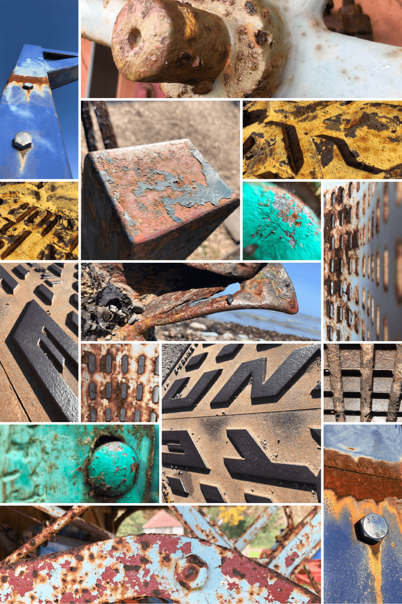

An archive of reclaimed glory.
I frame rust not as failure, but as creation. These textures tell stories of resilience, erosion, and formation.
Upcoming stalls, bundled offerings, and how to join in: “Take a second look at what is around you.”
Faith-rooted stewardship with Esther. Visit innostaa etsy for shared offerings.